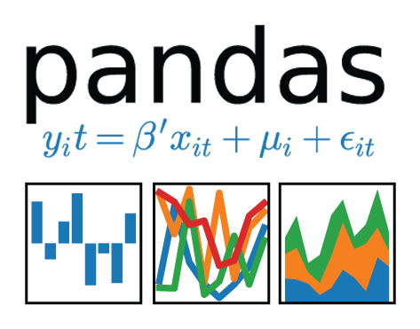
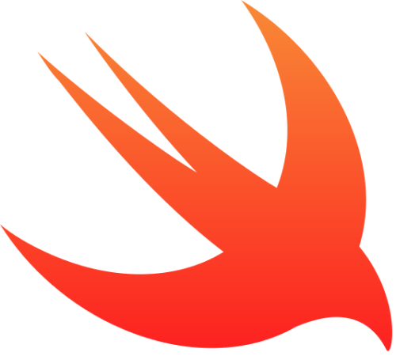

Hello!
I'm David! Here is my resume. I'm a engineer at Quantil, recently graduated from Universidad de los Andes where I studied Systems and Computing Engineering.
My interests range from security and cryptography to data science and howto use effective visualization to solve real world problems.
I also believe that we the people who understand technology must work to improve the world, not make it worse. Let everything we do be transparent and full of goodness. Protect people and their rights; Do not take advantage.
What I know and have worked with
| I really want to work with Python! |

|
| I use Node, Express and Meteor to build awesome backends in JS |


|
| For the web interface of my projects I use HTML, CSS and JS |


|
| I learned a lot of Java during my college years |

|
| I use Python + Pandas data science/engineering tasks |

|
| I have worked with Oracle11g, PostgreSQL, MongoDB and Firestore in various projects. I used both mySQL and MongoDB for my thesis. I currently use CassandraDB for inside company projects. |


|
| I used Swift to develop an awesome app with some friends! |

|
What I'm doing these days
Currently I am learning about Visual Analytics. I am also implementing an big data ETL pipeline using Python. It has been an amazing experience.
Projects
My thesis: Photoring
A tool for the navigation, exploration and visualization of large photo collections. I implemented the data model for a particular collection in two different database schemas: mySQL and MongoDB. I then compared both implementations in terms of suitableness to the problem, ease of implementation and efficiency.
My thesis advisor is John Guerra, an amazing professor and person.
Paper Poster Presentation Demo in Spanish GithubLocalStores

Do you know the closest stores with the best prices for your shopping list? Localstores is the way to go. Made with Swift, Google Maps API and Firestore. Project made with Daniel, Camilo and Juan.
Accio Planner
We want students who are having a hard time paying for college to have a better educational experience. We can help them with our course planner, which allows them to make better decisions.
Essentially, we created a web App that merges 2 or more majors/minors optimizing for time given the student constraints, in order to take much more advantage of the college experience. We used NodeJS, Express, GAMS, Angular, PostgreSQL.
We also wrote a paper with out optimization model.
Project made with Maria Camila, Laura and Juan. Together we are ACCIO.
WellCol
Application for storing information and monitoring emergencies a petroleum wells network.
The main objective for this project was to implement client requirements taking into account quality attributes such as usability, performance, reliability, and security.
We made use of load balancers such as Nginx in order to guarantee availability and also applied design patters such as Factory Method and Proxy to reach the desired levels of coupling and cohesion in the source code.
In addition, we implemented an API that allowed communication with real sensors measuring data using NodeRED.
Technologies used: NodeJS, Express, PostreSQL and Angular. We developed a client for Android and iOS.
Project made with Juan José, Juan and Sebastián.
Other small projects
PuertoAndes
Application for storage, management and analysis of a port network.
Database had tables with more than 2 million rows.
Technologies used: Oracle11g, Java JDBC, SQLDeveloper.
CCT
Application for finding shortest/cheapest/ routes for package delivery in Bogotá, Colombia using shortest path, Dijkstra and other graph algorithms.
This application was made using pure Java.
My life at Uniandes
CS Graduate courses:
- Cryptography: Graduate level foundation on traditional cryptography, principles of cryptoanalysis, secret key ciphers, key agreements, authentication protocols, digital signatures and public key ciphers. Professor Milton Quiroga is awesome and I can sincerely say this is one of the best courses I've taken. To see the type of things we do: Shamir's secret sharing scheme.
- Secure Infrastructure: The course revolves around the components of an infrastructure solution: services and applications, processing, operating systems and communications. For each of these components, the respective risks and the corresponding controls that can be implemented are analyzed.
- Scientific Computing and Visualization: More info here. Together with Juan Murillo we wrote an small paper.
Uniandes courses are full of teamwork and projects, here are some of the CS undergraduate courses I have taken:
- Object Oriented Programming I & II: A cool introduction to programming, algorithms and data structures in Java
- Data Structures
- Design and Analysis of Algorithms: I learned about language semantics, algorithm construction, strategies, optimal route graph algorithms, Greedy algorithms, Search within graphs and the basics of computational complexity theory.
- Web development: Using React, HTML, CSS, MongoDB, Node and sometimes Meteor to build cool web applications such as kipcount. Learn more here.
- Business Intelligence: Using data science methods and tools to obtain valuable insights. Did an analysis about cellphone theft here in Colombia and also one about computer room usage at Uniandes. My professor was Christian Ariza
- Technological Infrastructure with Rafael Gómez
- Computer Infrastructure with Sandra Rueda
- Networking with Harold Castro
- Software Architecture: The purpose of this course is to develop skills in the areas of software design and architecture, relying on methodological tools such as architecture styles, patterns (eg, design, architecture). Likewise, the aim is to develop the ability to use and understand the impact of technology on software architecture.
- Software Development in Teams with Rubby Cassallas
- Transactional Systems (Databases): I learned really useful concepts that I have used practically every semester since I took the course.
- Modeling, Simluation and Optimization: Check this paper.
Other awesome courses I have taken:
- Geostatistics: I learned about spatial data analysis and geostatistical methods. More specifically: semivariogram analysis, kriging interpolation and model evaluation through cross-validation techniques.
- Scientific Programming: Numerical methods to solve science and engineering problems.
- Probability and Statistics
- Finance: Deciding to invest
- Ethical Dilemas
- Physics I & II: Mechanics, Thermodynamics and Electromagnetism
- Great Ideas in Physics
- Capitalism, History and Culture: How capitalism has shaped our world.
- Differential, Integral Calculus and Differential Equations, Linear Algebra, Vector Calculus
Here is my resume.
Contact:
protonmail:dmdr@protonmail.com
github: github.com/nonameable
linkedin: linkedin.com/in/davidmdelgador
email: dm.delgado10@uniandes.edu.co
Talks and teaching
Pyladies Colombia
Some things I've lived!


Say Hello!
I love to meet new people, specially while drinking a warm cup of tea.
Here is my resume if you need it.
Contact:
protonmail:dmdr@protonmail.com
gmail:davidmdelgador@gmail.com
github: github.com/nonameable
linkedin: linkedin.com/in/davidmdelgador
email: dm.delgado10@uniandes.edu.co
twitter: dwhitelined
Listen to "UR ROCK" on Spreaker.